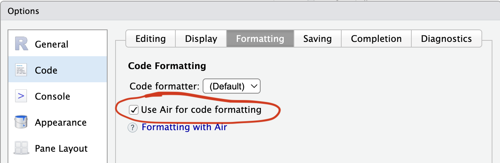

Git and GitHub for Collaborative Development
Outline
- Git workflow review
- Pull request workflows with
usethis - Continuous integration with GitHub Actions
- Code formatting with Air
- Adding a function via PR
Git Workflow Review
Where we left off
Make sure all changes from the fundamentals session are committed and pushed:
The core loop
Every day of package development follows the same loop:
- Pull latest changes
- Make a small, focused change
- Test that it works
- Commit with a clear message
- Push
Pull requests add a review step between commit and merge to main.
Pull Request Workflows
Collaborating
- Git is a distributed version control system
- Each collaborator has a full copy of the repository, including its history
- All collaborators can push changes to the remote repository (given they have permission)
- Changes made by collaborators can be pulled into your local repository
Why pull requests?
%%{
init: {
'theme':'base',
'showCommitLabel': false,
'themeVariables': {
'git0':'#6cc644',
'git1':'#f39c12',
'commitLabelColor': '#325c65',
'commitLabelBackground':'#325c65'
}
}
}%%
gitGraph
commit id: " "
commit id: " "
commit id: " "
commit id: " "
branch "branch"
commit id: " "
commit id: " "
commit id: " "
commit id: " "
checkout main
merge "branch" tag: "PR review & merge"
commit id: " "
commit id: " "
Even when working alone, PRs are valuable:
- Check code runs before it reaches
main - You get a diff to review your own/others’ work
- Allows efficient code review and discussion
- Allows fearless experimentation
With collaborators, PRs also enable code review.
Steps
- Create a new branch
- Make changes, commit, and push the branch to GitHub
- Open a Pull Request (PR) on GitHub
- Discuss and review the PR
- Merge the PR into the main branch
- Pull the latest changes to your local main branch
The usethis PR helpers
| Function | What it does |
|---|---|
pr_init("name") |
Create and switch to a new branch |
pr_push() |
Push branch, open PR on GitHub |
pr_pull() |
Pull latest changes on that branch from GitHub |
pr_merge_main() |
Merge latest changes from main into your branch |
pr_finish() |
Clean up after merge |
Other useful ones
| Function | What it does |
|---|---|
pr_pause() |
Stash work, return to main |
pr_resume("name") |
Return to a branch |
pr_fetch(123) |
Check out someone else’s PR |
Basic PR workflow with usethis PR helpers
---
config:
theme: base
themeVariables:
fontSize: 30px
---
flowchart LR
A([main]) --> PI["pr_init()"] --> B([Branch])
B --> C[Write & test]
C --> PP["pr_push()"] --> D([GitHub PR])
D --> E{Review}
E --> C
E -->|Merged| F([main updated])
F --> PF["pr_finish()"] --> G([Clean state])
style A fill:#2d6a4f,color:#fff,stroke:none
style F fill:#2d6a4f,color:#fff,stroke:none
style G fill:#2d6a4f,color:#fff,stroke:none
style B fill:#1d3557,color:#fff,stroke:none
style D fill:#457b9d,color:#fff,stroke:none
style E fill:#e63946,color:#fff,stroke:none
style C fill:#333,color:#fff,stroke:#666
style PI fill:#f4a261,color:#000,stroke:none
style PP fill:#f4a261,color:#000,stroke:none
style PF fill:#f4a261,color:#000,stroke:none
Demonstrates the full workflow: https://usethis.r-lib.org/articles/pr-functions.html
Starting a branch
- Creates and checks out the branch immediately
- You are now isolated from
main - Branch names: short, descriptive, hyphenated
Pushing and opening a PR
- Pushes your branch to GitHub
- Opens your browser to the “Create pull request” page
Writing a good PR description
Title: Short, imperative - “Add foofy function”
Body:
- What problem does this solve?
- Any design decisions worth explaining?
- Anything reviewers should pay attention to?
After review and merge
Once the PR is approved and merged on GitHub:
- Switches back to
main - Pulls the latest changes (including your merged work)
- Deletes the local feature branch
- Deletes the remote feature branch
Pausing and resuming
If you need to switch context mid-PR:
Reviewing someone else’s PR locally
The full picture
---
config:
theme: base
themeVariables:
fontSize: 20px
---
flowchart LR
A([main]) --> PI["pr_init()"] --> B([your branch])
B --> C[Write & test]
C --> PP["pr_push()"] --> D([GitHub PR])
D --> E{Review}
E -->|Changes needed| C
E -->|Approved & merged| F([main updated])
F --> PF["pr_finish()"] --> A
D --> PFetch["pr_fetch()"] --> G([reviewer's local])
G -->|review & comment| D
B --> PA["pr_pause()"] --> A
A --> PRe["pr_resume()"] --> B
style A fill:#2d6a4f,color:#fff,stroke:none
style F fill:#2d6a4f,color:#fff,stroke:none
style B fill:#1d3557,color:#fff,stroke:none
style G fill:#1d3557,color:#fff,stroke:none
style D fill:#457b9d,color:#fff,stroke:none
style E fill:#e63946,color:#fff,stroke:none
style C fill:#333,color:#fff,stroke:#666
style PI fill:#f4a261,color:#000,stroke:none
style PP fill:#f4a261,color:#000,stroke:none
style PF fill:#f4a261,color:#000,stroke:none
style PFetch fill:#f4a261,color:#000,stroke:none
style PA fill:#f4a261,color:#000,stroke:none
style PRe fill:#f4a261,color:#000,stroke:none
Demonstrates the full workflow: https://usethis.r-lib.org/articles/pr-functions.html
Continuous Integration
Why CI?
Your package works on your machine. But does it work on:
- Windows? macOS? Linux?
- R 4.4? R-devel?
Continuous Integration automatically runs checks on every push
- In practice, we’re going to use GitHub Actions, a free workflow automation service included with your GitHub account
We will add CI via a Pull Request
Create a new branch:
Add R CMD check via GitHub Actions
https://github.com/r-lib/actions
"check-standard": RunsR CMD checkon several platforms when you push"test-coverage": Compute test coverage and report at codecov.io- And more… (https://github.com/r-lib/actions/tree/v2/examples)
Creates .github/workflows/R-CMD-check.yaml which runs R CMD check on:
- macOS (release R)
- Windows (release R)
- Ubuntu (release, devel, and oldrel R)
Add a status badge
The action also adds a badge to your README.Rmd:
Viewing CI results
Go to the Actions tab on your repo.
Each push triggers a workflow run.
- ✅ Green checkmark = passing.
- ❌ Red X = something to fix.
Merge the PR on GitHub once CI is passing.
Run pr_finish() to clean up your branch after merging.
Code Formatting with Air
What is Air?
Air is a fast R code formatter - it automatically reformats your code on save.
Why it matters for collaboration:
- Eliminates style debates in code review
- Reduces noisy diffs (no more whitespace-only changes)
- Keeps everyone’s code consistent without thinking about it
Start a branch
Set up Air in your project
In RStudio, change these settings:


Install the Air command line utility: https://posit-dev.github.io/air/cli.html
Format your whole project
Push and merge
Review the diff on GitHub - you should see only formatting changes, no functional changes.
While we wait for CI…
Let’s leave this PR and start a new one…
Now we’re back on main and can start a new branch for the next feature.
Adding a Function via PR
Start a branch
Write the function
#' Calculate Biomass Index
#'
#' Calculates biomass index from CPUE and area swept.
#'
#' @param cpue Numeric vector of CPUE values
#' @param area_swept Numeric vector of area swept (e.g., km²)
#'
#' @return A numeric vector of biomass index values
#' @export
#'
#' @examples
#' salmon_cpue <- cpue(catch = 2, effort = 2)
#' biomass_index(cpue = salmon_cpue, area_swept = 5)
biomass_index <- function(cpue, area_swept) {
cpue * area_swept
}Document and check
Commit when check() passes cleanly.
Push and open a PR
Go back to the Air PR
Pause the biomass PR and return to main:
Now resume the biomass PR
On GitHub, review the biomass PR and merge once CI is passing.
Resources
- Happy Git and GitHub for the useR: https://happygitwithr.com/
usethis::pr_*helpers: https://usethis.r-lib.org/articles/pr-functions.html- GitHub Actions for R: https://github.com/r-lib/actions
- Air code formatter: https://posit-dev.github.io/air/